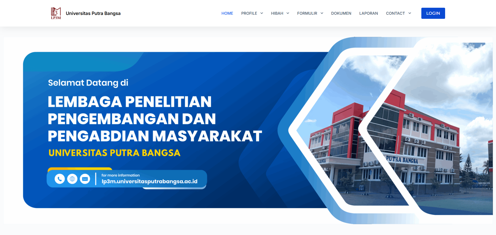

WordPress & Next.jsWebsite Lembaga Penelitian Pengembangan dan Pengabdian Kepada Masyarakat UPB
Website resmi LP3M Universitas Putra Bangsa yang dikembangkan dalam dua versi, yaitu menggunakan WordPress dan Next.js dengan database MySQL. Dilengkapi integrasi Looker Studio untuk mengolah dan menampilkan visualisasi data penelitian secara interaktif.
Lihat website